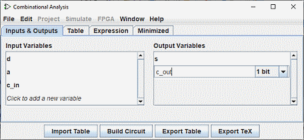
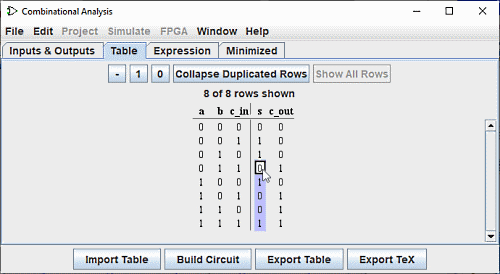

עריכת טבלת האמת
בפתיחת חלון הניתוח המשולב, תראה שהוא מורכב מארבע לשוניות.
דף זה מתאר את שתי הכרטיסיות הראשונות, כניסות ויציאות וטבלה. העמוד הבא של המדריך מתאר את שתי הכרטיסיות האחרונות, ביטוי וממוזער.
הכרטיסיות כניסות ויציאות

הכרטיסייה כניסות ויציאות מאפשרת לך להציג ולערוך רשימות של כניסות ו/או יציאות כדי לציין את רוחב הנתונים שלהם.
כדי להוסיף פריטים לרשימה, פשוט בחר את השורה עם חץ למעלה או למטה חץאו לחץ על "לחץ כדי..." והזן את השם הרצוי. אתה יכול לראות מעל את השורה "c_out" שהוכנסה פנימה רשימת הפלטים. לאחר מכן תוכל להגדיר את רוחב הנתונים של קו זה (בצד ימין) עם העכבר. הEnter או מקש Tab יסיימו את הקלט.
אם תרצו לשנות את שם אחת מהשורות הקיימות, לחיצה כפולה על הטקסט תאפשר לכם לשנות אותו.
כדי למחוק שורה, בחר אותה כמו קודם עם העכבר או החץ למעלה או למטה חץ ולאחר מכן השתמש במקש מחק.
כדי לסדר מחדש את סדר השורות, בחר אותו כמתואר למעלה, ולאחר מכן השתמש בCtrl+חץ למעלה או שילוב Ctrl+חץ למטה כדי להזיז אותו למעלה או למטה ברשימה.
כל הפעולות משפיעות על טבלת האמת באופן מיידי.
הכרטיסייה טבלה
בכרטיסייה טבלה תמצא סדרה של לחצנים ואת טבלת האמת הנוכחית., בתרשים בסדר המקובל, כאשר תשומות מהווים את העמודות משמאל והפלטים מהווים העמודות מימין.

אתה יכול לערוך את הערכים הנוכחיים המופיעים בעמודות הפלט על ידי לחיצה על הערך המעניין. אתה יכול שנה את הערכים הנוכחיים בעמודות הפלט על ידי לחיצה על הערך שבו אתה מעוניין ושימוש ב- מקשי המקלדת 0,1 ו-- (המייצגים ערך לא מוגדר) או ב- למעלה הכפתורים - , 1 , 0 . לאחר הכניסה ל ערך, הסמן נע למטה שורה אחת בעמודה. שילובי המקשים חץ למעלה/למטה או חץ שמאלה/ימינה משמשים כדי להעביר את הבחירה.
באותו אופן, אתה יכול לשנות את הנתונים בעמודות הקלט על ידי הוספת ערכים בלתי מוגדרים (-) או כדי למחוק אותם והחליפו אותם ב-0 או 1.
בהקשר זה הלחצן כווץ שורות כפולות מפשט את הייצוג של טבלה והצג את כל השורות בשלמותן.
אתה יכול להעתיק ולהדביק ערכים באמצעות הלוח. ניתן להעביר את הלוח לכל אפליקציה תומך בטקסט מופרד בטאבים (כגון גיליון אלקטרוני).
אם טבלת האמת מבוססת על מעגל קיים, ייתכן שתראה כמה ריבועים אדומים בעמודות הפלט עם "E" בהם. אלה תואמים לשגיאות שהתרחשו בעת חישוב הערך עבור אותה שורה - או המעגל נראה שהוא מתנודד, או שערך הפלט היה ערך שגיאה (שיוצג כחוט אדום ב- מעגל לוגיסים).
הלחצנים ייצוא טבלה, ייבוא טבלה
הלחצנים ייבוא טבלה וייצוא טבלה מאפשרים לך לשמור ו בהתאמה טען מחדש הגדרת טבלת אמת מקובץ.
הבא: יצירת ביטויים.